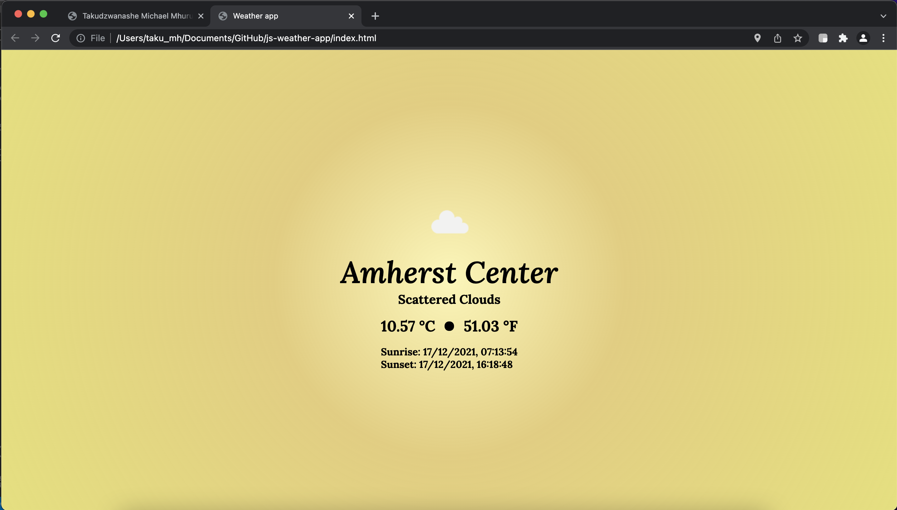

- Artificial Intelligence in the Liberal Arts | Amherst College (Feb - Dec 2022)
- Website developer and manager responsible for coordinating the web dev team to migrate the
organisation's website from a Jekyll template to a handcoded HTML-CSS site and managing website content.
In my last month, I also worked on revamping the organisation's discourse site.
Programming Languages
-
Java |
R |
Python |
JavaScript |
Swift |
HTML |
CSS
Internships

- David Harold Blackwell Summer Research Institute | Stanford University (Summer 2022)
- Data analyst intern in the Coleman Bioengineering lab, optimising the quantification of
uncoordinated systems for gastro-intestinal dynamic motion using the Kuramoto model and Python

- Barnard Programming Languages Lab | Remote (Winter 2021)
- Data analysis and visualization of over 100 records of user data for a live coding sequencer tool in Python
- Barnard Programming Languages Lab | Remote (Summer 2021)
- A.I Research Assistant developing a web tool to teach K-4 kids about data (collection, quality and how that
affects the way machines learn) using GPT3-J on the back-end and HTML-CSS-JavaScript on the front-end.
Projects

- Zhara: An analysis of food security in Zimbabwe | Winter 2022
- Personal research and analysis project in R using datasets scraped and obtained from the Food and Agriculture Organisation, the Zimbabwean
National Statistics Agency and the Zimbabwean Ministry of Agriculture and Land.

- Weather App: Personal introduction to Swift & APIs| Winter 2021
- An iOS app built in Swift that uses APIs to determine the weather conditions of the users location. This
was the application of my personal study of APIs and Swift.

- Weather Web App: Personal introduction to APIs| Winter 2021
- A web app built in JavaScript-HTML-CSS that uses APIs to determine the weather conditions of the users location. This
was the application of my personal study of APIs and JavaScript.